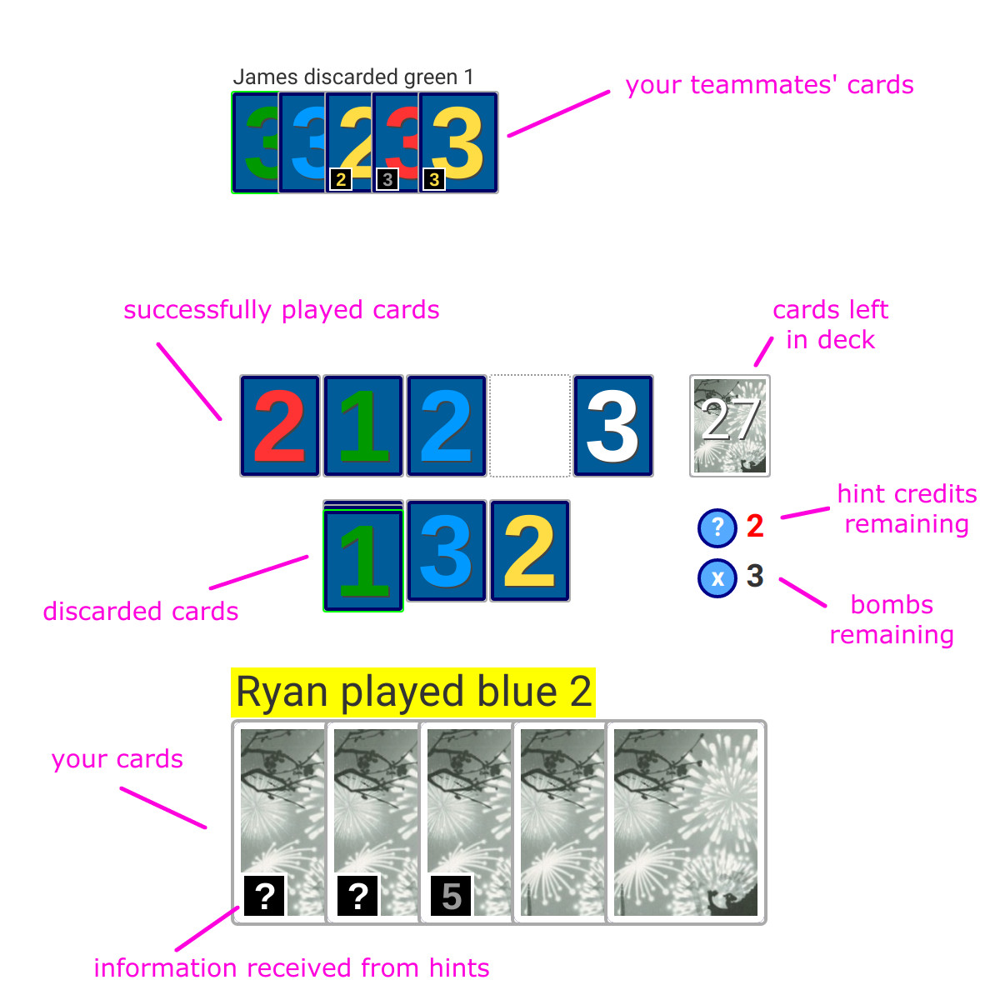

Stats
User:{{params.name}}
How to play
Fireworks is a collaborative, turn-based card game that you play with 1-4 other players on the internet. In Fireworks everyone can see the cards in your hand except for you, and you have to rely on hints from others plays to understand which cards are which.
Objective
The goal of the game is build stacks of cards of the same color, with ascending cards: the blue 1 must be played before the blue 2, which must be played before the blue 3, etc. When the game is over, your score is the number of cards successfully played. A perfect score of 25 is possible, but challenging. Try to get as high a score as possible!
Game board
In the deck, there are five colors of cards (blue, red, white, green, and yellow). In each color, there are three 1’s, two 2’s, two 3’s, two 4’s, and one 5. During the game you will be building only one pile of each color.
Turns
Each player starts with a hand of 5 cards (in a 2- or 3-player game) or 4 cards (in a 4- or 5-player game), turned to face away from them. A player is randomly chosen to go first, and then play continues clockwise after each turn.
On their turn, a player can do one of three actions: hint, play, or discard.
1. Give a hint to another player
A player can choose to tell another player some information about their cards. To do this, the player chooses the other player, taps one of their cards, and chooses whether to tell the player about that card’s color or number.
The catch is that when you tell a player about a card’s number or color, you have to tell that player about all of their cards of their color or number. For example, if a player is holding three green cards, you can’t point out an individual green card - you must tell them that all three of those cards are green.
When you use a hint, you lose a hint credit . You start the game with 8 hint credits, and gain one back every time a player discards a card. You can’t ever have more than 8 hint credits, though you can still discard cards at that point. If there are 0 hint credits remaining, you cannot give a hint to another player.
When you receive a hint about your cards, it may tell you more information than just the actual information conveyed in the hint. The time when a player chooses to give you a hint, the particular hint they chose to give, and any hints they chose not to give can all hold hidden meaning…
2. Play a card
A player can tap a card from their hand and choose to play it onto the table. That card is valid to play if its number is 1 more than the last card played of that color. For example, if the last blue card played was a blue 2, then the only blue card that can be played is the blue 3. 1’s can only be played before any other card of that color has been played.
The player doesn’t need to know the color of a card to play it. For example, a player may choose to play a 2 without knowing which color it is and which pile it will end up on. As long as the last card played of that color was a 1, it’s a valid play.
If a player attempts to play a card that is not valid to play, one of the three bombs explodes! If all three bombs explode, the game is over.
3. Discard a card
A player can tap a card from their hand and choose to discard it. This generates a hint credit that can be used to hint other players about their cards.
If a player plays or discards a card during their turn, they end their turn by picking up another card from the deck.
Game end
Play continues until one of three things happens:
- All three bombs have exploded
- There are no playable cards remaining
- The last card is drawn from the deck
In the first two cases, the game is over immediately. In the third case, each player is allowed to take one more turn after the final card has been drawn. The last turn will be taken by the player who had taken the final card in their previous turn.
Your final score is the number of cards successfully played. A perfect game is 25!